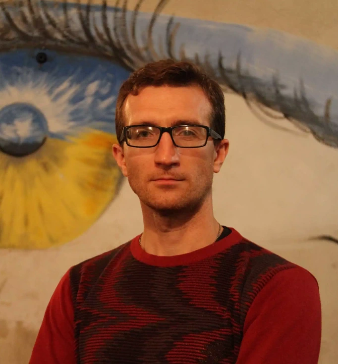
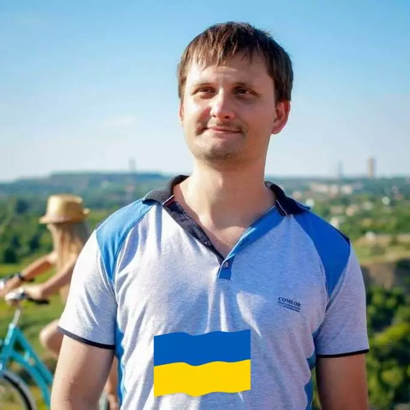
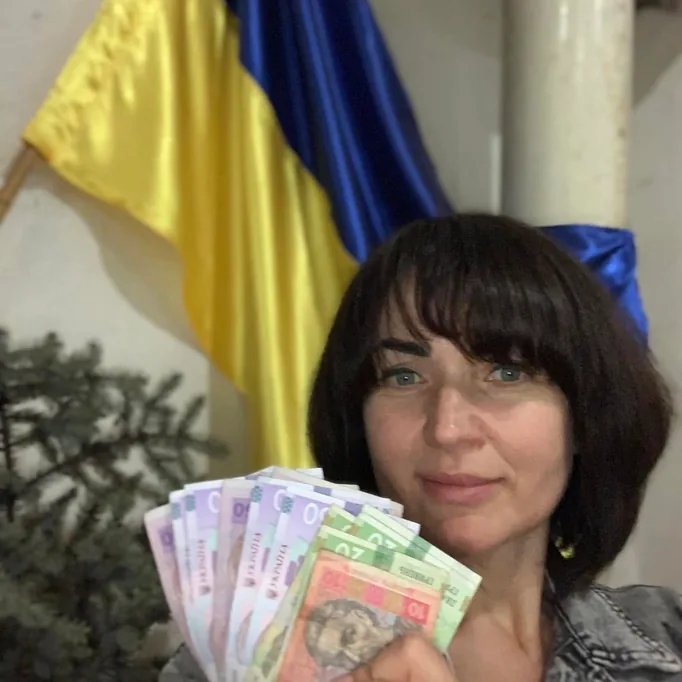

The Bombik art space is currently closed and no new events are taking place.
About the Bombik art space
Bombik was a group of volunteers in Kryvyi Rih. In a bomb shelter in the Pokrovskyi district we put on plays, concerts, poetry evenings and shows for children, and passed the donations on to the Ukrainian army. We’re a mining town, and a creative one too!

Pavlo Osikov
Actor, poet, director and screenwriter. He founded two theatre projects, the AVE one-man theatre and the SHUM extreme theatre, and he volunteers on the side.
While looking for a room where audiences would be safer during his shows, Pavlo came across Bombik. The organisers later turned the bomb shelter into an art space, and it became a permanent home for art, music, theatre and other events.

Denys Chyhirov
Organiser of Bombik and the person who got the whole idea moving. Volunteer, head of a homeowners’ association, father of two great kids and a good husband to his wife.
I started volunteering for the army as soon as the war began. Helping displaced people, volunteers and various charities still didn’t give me the feeling that I was doing all I could for our victory. Something was missing, and it all seemed too little. So I kept looking for ways to help the army more.
I’d been planning a place for people to go out and enjoy culture for a long time. I put in a project for an art space in our Shakhtarskyi Park, but it didn’t get through the competition. After the war started I got a call from a friend, Pavlo Osikov, who’s known in our city as an actor who puts on great shows. He asked if I had a room where he could hold his events. I went through a few options and then remembered that a very active head of a homeowners’ association, Svitlana Ostapchuk, had a bomb shelter in her care! Now there’s an idea! Really cool and creative! No sooner said than done! Svitlana backed it, Pavlo liked it, and after some preparation we held the first show! Then I called up my creative contacts and off we went!

Svitlana Ostapchuk
Head of a homeowners’ association, host of the bomb shelter and co-founder of the art space. She was the one who agreed to hold creative evenings there. Thanks to her, Bombik felt like home, and there was always fragrant tea waiting for guests.
What Bombik was for
raising money for the army’s needs;
keeping up the morale of local people and of those who had to leave their homes;
keeping creative people and their audiences in touch;
running cultural events safely.
How we got the shelter ready for events
got in touch with artists and performers;
hung original paintings by Kryvyi Rih artist Serhii Areshchenko;
made an installation of photos by Kryvyi Rih photographer Anatolii Novak;